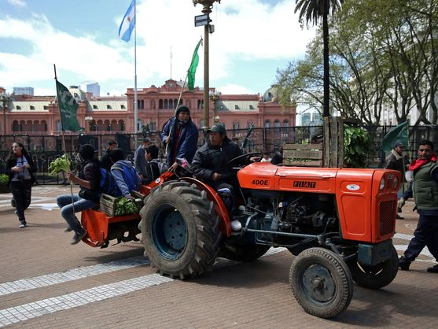

WEBPAGES
Éstas son las páginas que he creado y programado. Algunas están publicadas y otras son proyectos de github.
These are the webpages that I've created and programmed. Some are published and others are just github projects.
TODO NOTICIAS

EL CONFIDENCIAL



20 MINUTOS
La detención de dos sacerdotes que recuerda a “Spotlight” y sacude a la Argentina
Detienen a dos sacerdotes por 22 denuncias de abuso a niños hipoacúsicos un instituto de menores en la provincia de Mendoza. Uno de ellos tenía denuncias en Italia desde 1955, pero la Iglesia lo reubicó. Los fiscales estiman que podrían ser hasta 60 casos.